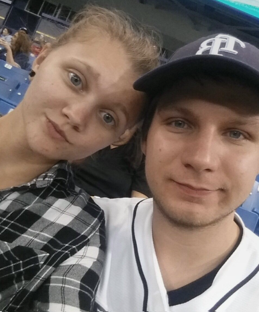

Hello! My name is Dylan Ramsey. Sometimes online I will go as Dylan Brad Ramsey, this is because
it's a big world with a lot of people in it and as a result there's a couple Dylan Ramsey's out there, I want to make it clear which Dylan Ramsey I am online;
so I added the brad in the middle, which used to be an alter ego name I've used on online video games in the past. I'm 21 years old
and I am young tech professional Web Developer and Software Engineer. I grew up around and loved technology my whole life. About the time I was 19 I made the decision that I wanted to base my career around it; so I
took a few coding classes, read A LOT of books, and a couple years later here we are. I was born in and currently living in Sarasota, Florida. Some of my interest include;
technology (of course),films, reading and writing, guitar, longboarding, and sports! Specifically Baseball and Football!
April-1-2018
April-1-2018